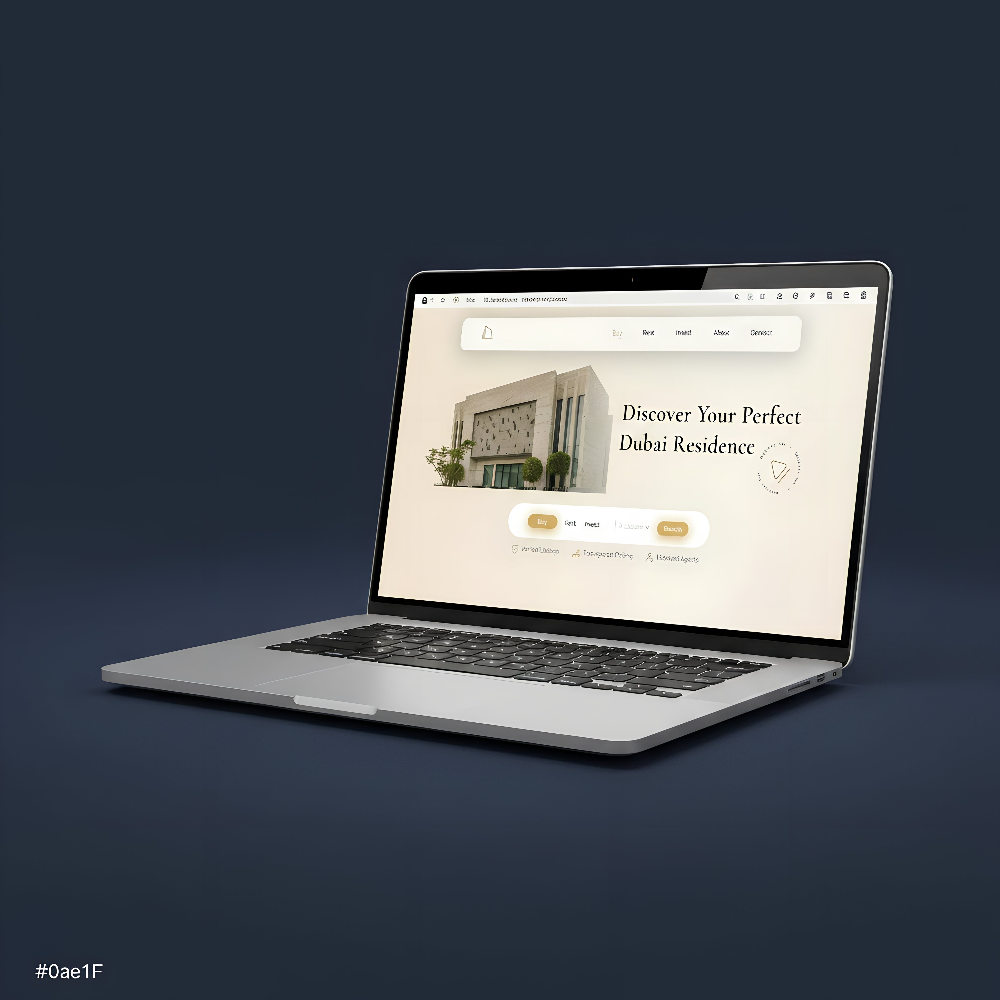
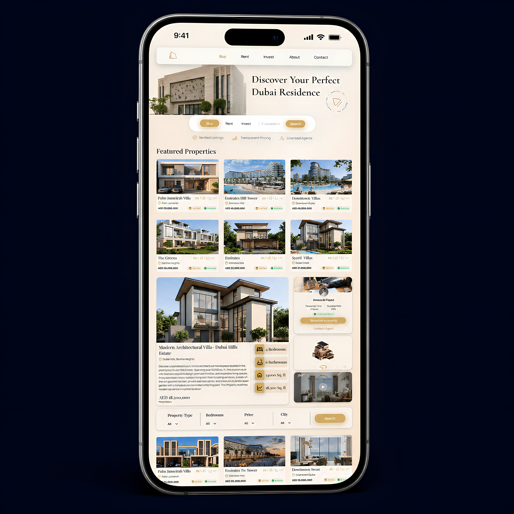
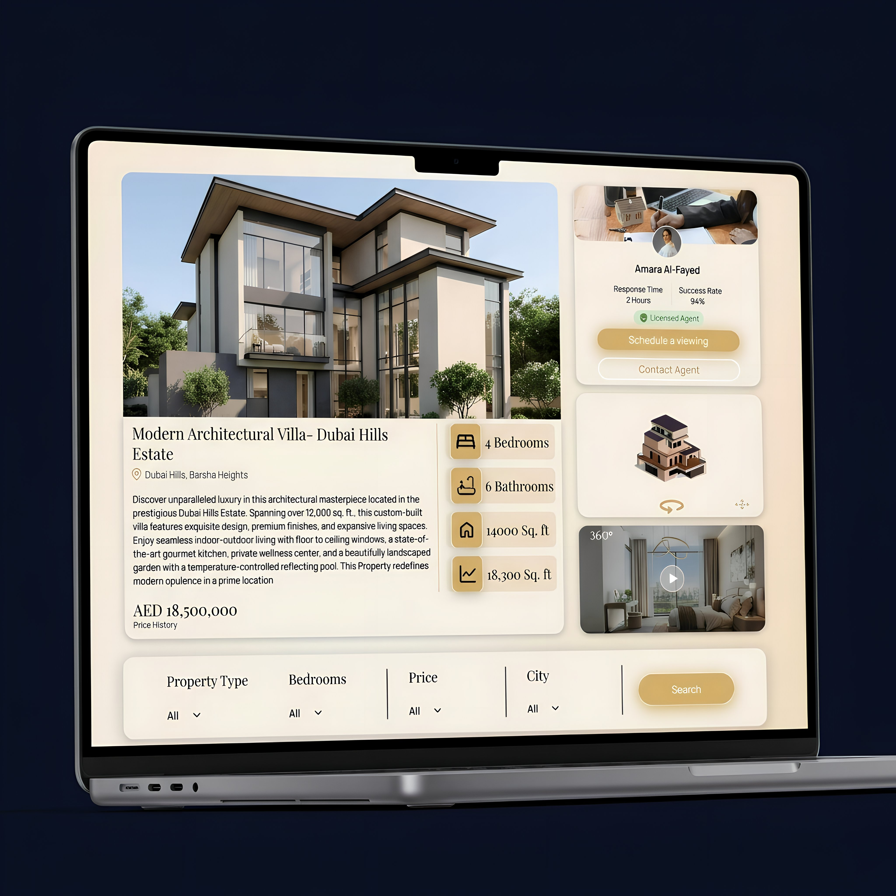
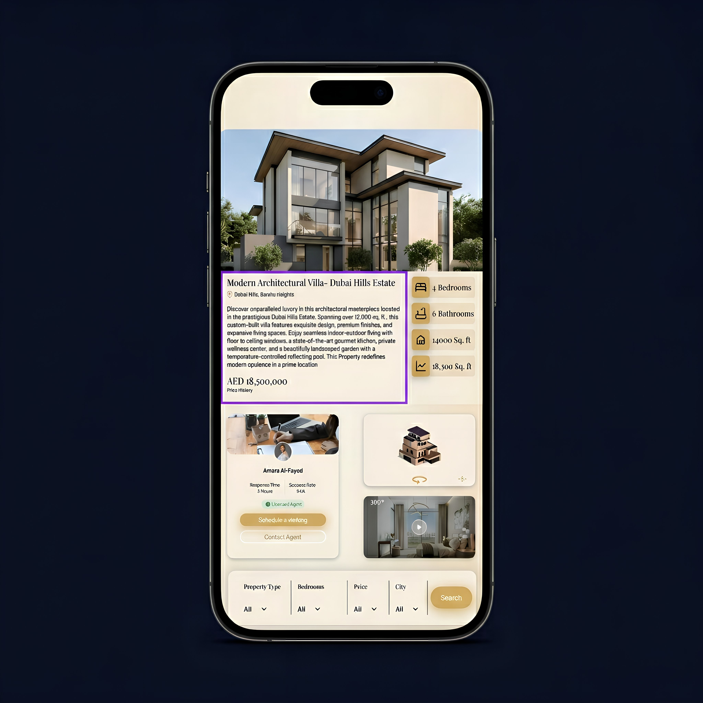

Self-initiated case study · 2024
AIRA.
AIRA.
Trust-first
real estate.
A redesign of how Dubai property platforms ask for your details. Less ambush. More choice. Self-initiated, not commissioned.
A redesign of a Dubai property platform built on 4 breakpoints (1317 / 1004 / 835 / mobile). I designed it in Figma and built the front-end on the MERN stack. The goal wasn't to make a nicer homepage. It was to flip how property sites treat people, from chasing them to respecting them. Self-initiated. No commercial client. Built against what I see Dubai property sites doing.
Four trust failures.
Built for the agent, not the buyer.
Most Dubai real-estate sites do the same thing. A popup blocks the screen within 5 seconds. Listings stay marked "Available" after they've sold. Click on one and an agent calls in 30 seconds, often pitching a different property than the one you opened.
What this does: users stop trusting the platform, then the agent, then the listing itself. Conversion drops. But the bigger issue is retention. Users don't come back to a site that ambushed them the first time.

Before5-second popups. Fake "Available" labels on sold listings. Silent lead capture on hover. Urgency banners on AED 25M villas.
ContextLuxury inventory shown in a UI built for classifieds. Users learn to flinch on every property site they visit.
AfterVerified + Available shown together on every card. Registration only when the user asks. Sold Out shown openly, not hidden.
For an AED 18M decision, trust is the whole product.
No popup. We waited until you asked.
The homepage does not block the user. There's a hero ("Discover Your Perfect Dubai Residence"), one search row, three trust labels (Verified Listings, Transparent Pricing, Licensed Agents), and the Featured Properties grid. That's it. The user can browse without being asked for anything.

Most users are on phones.
Dubai property browsing mostly happens on phones, often during commutes or after work. So the mobile layout reorders the hero. The property image comes first. Then the headline. Then the search row. It reads top to bottom, not the way the desktop layout reflows.
The Verified and Available badges sit on every card above the fold. The user sees the trust signal before they have to look for it.

Verified. Available. Sold Out.
Every listing card carries two badges next to each other. Verified means the property is checked against RERA and the broker license. Available means the listing is still for sale as of the last data sync. When a property sells, the card stays on the site with a Sold Out badge instead. Showing Sold Out openly tells the user the platform isn't lying. That does more for trust than 100 "Available" labels.

Showing Sold Out is the point.
Most platforms remove sold listings the moment they sell. AIRA keeps them on the site with a Sold Out tag. A user who sees Sold Out learns the platform doesn't hide things. The next listing they see marked Available is now believable.
It also blocks the agent's bait-and-switch. "That one just sold, but I have something similar" doesn't work if the user already knows which listings are sold and which aren't.

Lead capture as response.
Not ambush.
The registration modal only opens when the user clicks something that asks for it, like Schedule a viewing or Request a callback. It never opens on a timer. Choice of contact mode sits at the top of the form as a radio toggle. A user who picks video call is showing they're ready. A user who picks callback is showing they're still exploring. The form treats them differently because they want different things.
The project and unit type are pre-filled based on the property the user was just looking at. The phone code defaults to +971 but is editable, since a lot of Dubai luxury buyers are international. News-and-offers is opt-in, not a pre-checked box.

Pre-fill what you already know.
When the registration modal opens, the property the user was looking at is already attached to the form. Unit type, project name, and source page are filled in silently. The user only types two things: their name and their number. Then picks how they want to be contacted.
The friction in real-estate forms isn't the form. It's the interruption. Removing the interruption removes the friction without removing the lead capture.

Decision log
Four calls behind the redesign.
Why show Verified and Available together, not just one?
A single badge is easy to fake. "Verified" by itself doesn't tell you if the listing is still for sale. Two badges next to each other commit the platform to two things at once: the listing is real AND it hasn't sold yet. Either being wrong gets noticed by users. That risk is what makes the pair credible.
Why keep Sold Out cards on the site, not delete them?
Most platforms delete sold listings within seconds. AIRA keeps them, marked Sold Out. When a user sees Sold Out, they learn the platform isn't hiding things. The next listing marked Available now means something. Deleting is faster but it costs the user the only signal they had that the data was honest.
Why click-triggered registration, not exit-intent or a 5-second popup?
Exit-intent punishes you for trying to leave. Timed popups punish you for being slow. Both treat the user like a target. Click-triggered means the form only shows up when the user asked for it. The friction in real-estate forms was never the form. It was the interruption.
Why default to +971 but keep it editable?
Most traffic on Dubai property sites is local, so +971 makes sense as the default. But about 30% of luxury inquiries come from outside the UAE. Forcing a UAE phone code would push those users out. Default to what fits most, but stay open to the lead worth the most.
Designed and built it myself.
I designed this in Figma, then built the front-end in MERN. Every design decision had to survive the build. Lazy-loading on the property grid. Filter state. Form validation with proper error messages. The simple decisions held up. The fancy ones got dropped during the build, which is exactly when fancy decisions get dropped.
4 bp
Breakpoints: desktop 1317, large tablet 1004, small tablet 835, mobile. One design system, no per-device hacks.
0
Entry-time popups. The form only opens when the user clicks something that asks for it.
MERN
MongoDB, Express, React, Node. I designed the whole thing and built the front-end. Not just a Figma file.